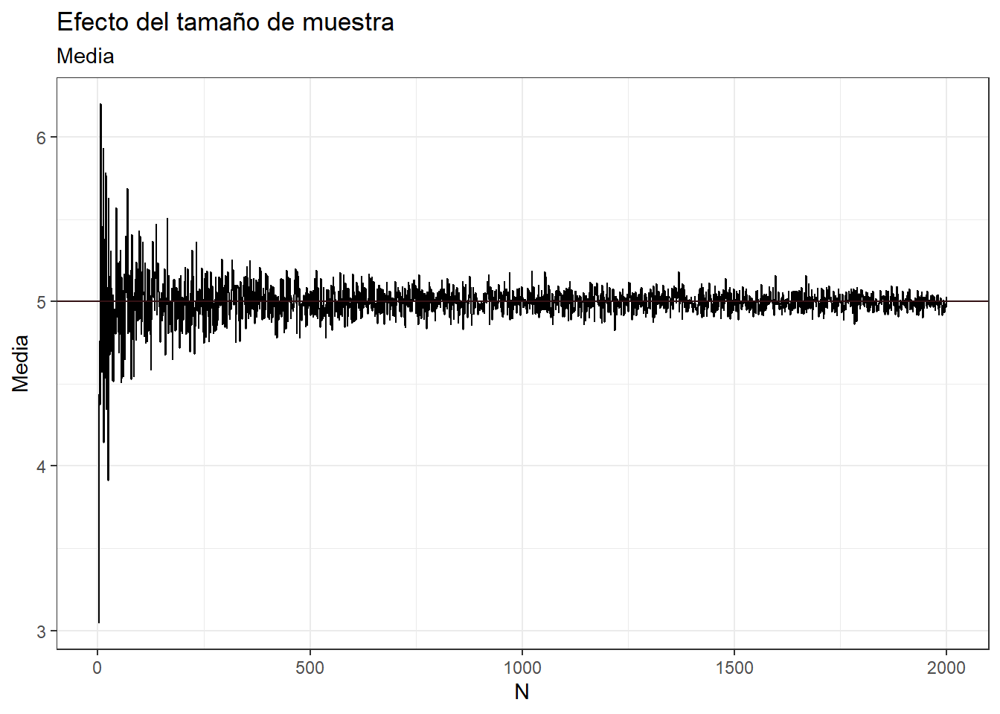
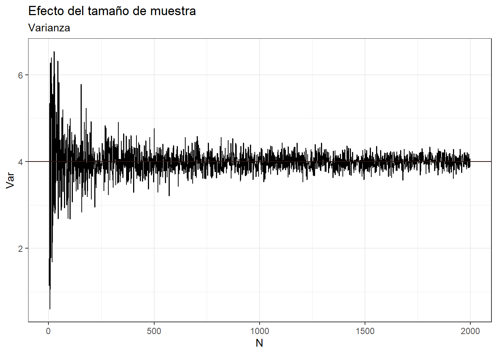
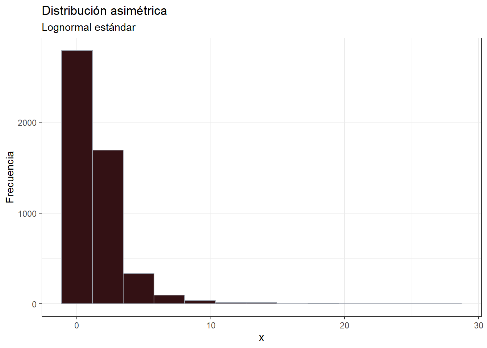
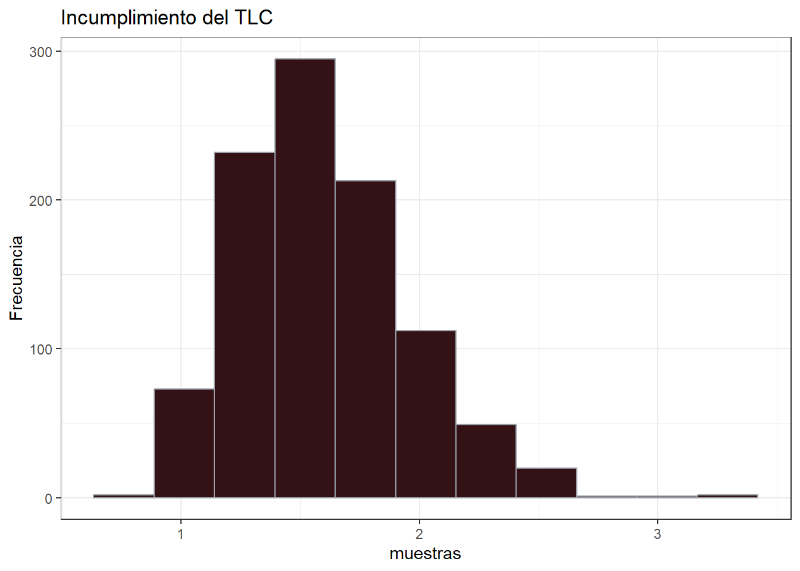
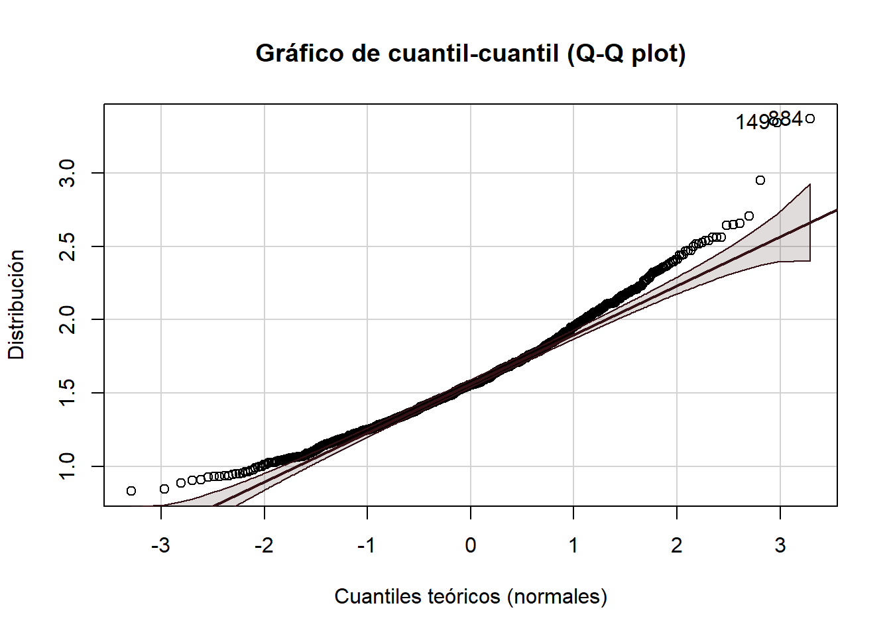
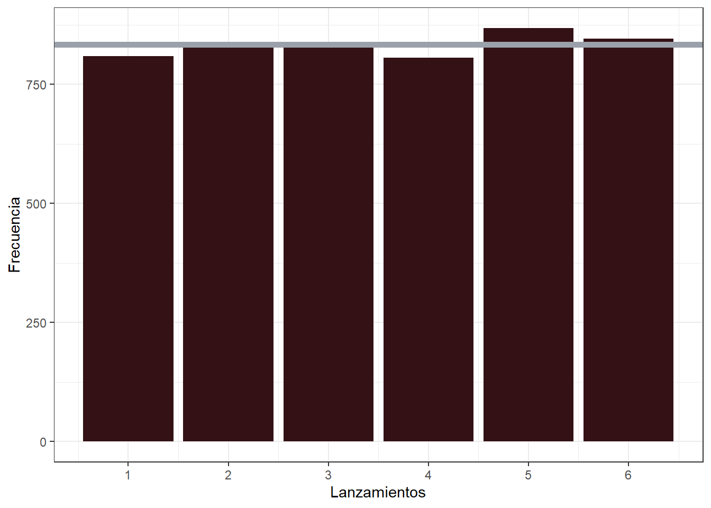
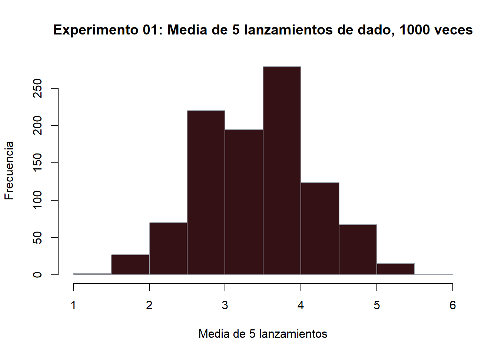

library(tidyverse)
library(scales)
library(BSDA)
library(samplingbook)
library(EnvStats)
library(pwr)
library(car)Teorema del límite central
Librerías
Distribución muestral
La idea básica que se sigue es que un estadístico muestral es también una variable aleatoria, entonces ese estadístico posee una distribución. Por tanto:
La distribución de un estadístico muestral recibe el nombre de distribución muestral o distribución de la muestra. La distribución muestral en la distribción de muestras que pertenecen a la misma población.
Por ejemplo:
Supongamos que queremos estimar la altura media de los estudiantes de una universidad. Para ello, tomamos una muestra aleatoria de 50 estudiantes y calculamos su altura media. Repetimos este proceso muchas veces, tomando muestras aleatorias de 50 estudiantes cada vez y calculando la altura media de cada muestra. La distribución de todas estas medias muestrales es la distribución muestral de la media de altura de los estudiantes de la universidad.
Distribución muestral de la media
Supongamos que la muestra aleatoria proviene de una población normal.
Dicha distribución tiene unos parámetros \(\mu\) y \(\sigma\), que son poblacionales. Siendo \(X_1, \cdots, X_n\) una muestra aleatoria que proviene de dicha población tendrá parámetros conocidos o desconocidos \(\bar{x}\) y \(s\).
Por ejemplo, tomemos una distribución normal con \(\mu = 5\) y \(\sigma = 2\)
\[ x \sim N(5, 2) \]
Cambiemos gradualmente el tamaño de muestra y observemos el comportamiento del tamaño de la muestra sobre el parámetro muestral. Veamos como al aumentar N, la media de la muestra se vuelve más cercana a 5.
datos <- 2:2000 %>%
purrr::map_dfr(function(N){
muestra <- rnorm(N, 5, 2)
data.frame(N, Media = mean(muestra), Var = var(muestra))
})
datos %>%
ggplot2::ggplot(aes(x = N, y = Media)) +
geom_line() +
geom_hline(yintercept = 5, color = "#331114") +
labs(title = "Efecto del tamaño de muestra",
subtitle = "Media") +
theme_bw()
Si la muestra proviene de poblaciones no normales o desconocidas, se puede aplicar el Teorema del Límite Central (TLC).
Distribución muestral de la varianza
Se sigue de igual forma que con la sección anterior.
¿Por qué el intercepto en este gráfico es 4 y no 2? Si la variable aleatoria es \(x \sim N(5, 2)\).
datos %>%
ggplot2::ggplot(aes(x = N, y = Var)) +
geom_line() +
geom_hline(yintercept = 4, color = "#331114") +
labs(title = "Efecto del tamaño de muestra",
subtitle = "Varianza") +
theme_bw()
Ley de los grandes números
Ya fue demostrado en los ejemplos anteriores, indica que son conocidos aquellos resultados del cálculo de probabilidades sobre la estabilidad a largo plazo de una variable aleatoria.
Formalmente, se refiere a una sucesión de variables aleatorias independientes e idénticamente distribuidas con varianza finita, y asegura que el promedio de las \(n\) primeras observaciones (variables aleatorias) se acerca a la media teórica cuando el número \(n\) de repeticiones tiende hacia infinito.
Ley débil
\[ \lim_{n \to \infty}\left(1 - \frac{\sigma^2}{n\varepsilon^2} \right) = 1 \]
Establece que se puede encontrar un tamaño de muestra \(n\) que garantice con una probabilidad tan cercana a uno como se quiera, que el promedio que se obtendría en esa muestra, no difiera del promedio poblacional en menos de una cantidad tan pequeña como se desee \(\varepsilon\).
Por ejemplo: para una población con media desconocida y \(\sigma = 2\), se desea determinar el tamaño de muestra que garantice un probabilidad de al menos 0.95 de que la media muestral que se calcularía en esa muestra no se aleje de \(\mu\) en 0.5.
\[ 1 - \frac{\sigma^2}{n\varepsilon^2} = 0.95 \\ \left((1-0.95)*\frac{\varepsilon^2}{\sigma^2}\right)^{-1}=n \\ \left(0.05*\frac{0.5^2}{2^2}\right)^{-1} = 320 = n \]
Veamos esto en el gráfico anterior de la media
datos %>%
ggplot2::ggplot(aes(x = N, y = Media)) +
geom_line() +
geom_hline(yintercept = 5, color = "#331114") +
geom_vline(xintercept = 320, color = "#9BA1AB",
linewidth = 1.5, linetype = 4) +
scale_y_continuous(breaks = scales::extended_breaks(20)) +
scale_x_continuous(breaks = scales::extended_breaks(10)) +
labs(title = "Efecto del tamaño de muestra",
subtitle = "Media") +
theme_bw()
Ley fuerte
La frecuencia relativa con que ocurre un hecho en pruebas independientes y en las mismas condiciones converge a la probabilidad del hecho observado con probabilidad 1. Su demostración excede el alcance de este recurso.
Teorema del límite central (TLC)
La distribución normal se puede usar frecuentemente para aproximar las distribuciones de otras variables aleatorias, como consecuencia del Teorema del Límite Central (TLC).
El TLC dice, de manera simplificada, que la distribución de las medias muestrales (aleatorias e independientes) sigue una distribución normal, siempre que el tamaño de las muestras sea lo suficientemente grande.
Nota: quizá en otros cursos o incluso en literatura desactualizada se le indique que este tamaño de muestra “lo suficientemente grande” es 30, pero eso es una regla de “dedo” que hoy en día no tiene mucho fundamento.
Hagamos una demostración de lo que se indica en la nota.
- Generemos una distribución asimétrica
\[ x \sim LN(0, 1) \]
dist_asimetrica <- data.frame(x = rlnorm(5000))
dist_asimetrica %>%
ggplot2::ggplot(aes(x)) +
geom_histogram(bins = 13, color = "#9BA1AB", fill = "#331114") +
labs(title = "Distribución asimétrica",
subtitle = "Lognormal estándar",
y = "Frecuencia") +
theme_bw()
- Tomemos 1000 muestras de tamaño \(n = 30\) y calculemos el promedio de cada muestra y hagamos un histograma. En buena teoría, con ese tamaño de muestra la distribución generada debería ser normal
# set.seed(456)
muestras <- 1:1000 %>%
purrr::map_dbl(function(m){
media <- dist_asimetrica %>%
dplyr::slice_sample(n = 30) %>%
dplyr::pull(x) %>%
mean()
return(media)
})
# Generación del histograma -----
data.frame(muestras = muestras) %>%
ggplot2::ggplot(aes(muestras)) +
geom_histogram(bins = 11, color = "#9BA1AB",
fill = "#331114") +
labs(title = "Incumplimiento del TLC",
y = "Frecuencia") +
theme_bw()
No se ve con forma de campana centrada, ¿verdad? Entonces, ¿por qué no se cumplió el TLC?
Ahora hagamos una prueba formal.
# Prueba formal -------
nortest::ad.test(muestras)
Anderson-Darling normality test
data: muestras
A = 5.7617, p-value = 3.422e-14car::qqPlot(muestras,
main = "Gráfico de cuantil-cuantil (Q-Q plot)",
ylab = "Distribución",
xlab = "Cuantiles teóricos (normales)",
col.lines = "#331114")
[1] 884 149En resumen, un tamaño de 30 no fue adecuado, no se cumplió el TLC. Por tanto esa regla no es una verdad inamovible, es una sugerencia qué puede ser válida en la mayoría de ocasiones.
Continuando con el TCL, bajo condiciones bastante generales, las sumas y las medias de muestras de observaciones aleatorias extraídas de una población tienden a poseer, aproximadamente, una distribución acampanada cuando se repite el muestreo muchas veces.
En teoría esa distribución estará definida por la misma media que la poblacional y con una desviación típica igual al cociente entre la desviación típica poblacional dividida por la raíz cuadrada del tamaño de muestra (o la varianza poblacional dividida entre el tamaño de muestra).
\[ \bar{X} \sim N\left(\mu, \frac{\sigma}{\sqrt{n}}\right) \]
Ejemplo 01
Supongamos un experimento de lanzamiento de dados, cada cara está igual de cargada, por lo que la probabilidad de obtener cualquier cara es de 1/6.
# así sería lanzar el dado 5 veces
sample((1:6), # valores posibles (las caras del dado)
5, # cantidad de lanzamientos
replace = TRUE, # puede salir el mismo valor varias veces
prob = rep(1/6, 6)) # probabilidad para valor de las caras del dado[1] 6 1 1 1 4Ahora, repitamos el lanzamiento, 5000 veces y observemos la distribución de los datos, la frecuencia relativa de cada lanzamiento debería ser aproximadamente 1/6 = 16.67 %.
lanzamientos <- sample(1:6, 5000, replace = TRUE, prob = rep(1/6, 6))
tabla <- summarytools::freq(lanzamientos)
data.frame(tabla) %>%
tibble::rownames_to_column() %>%
dplyr::select(1:4) %>%
setNames(c("Valor del dado", "Frecuencia", "Frecuencia (%)",
"Frecuencia acumulada (%)")) %>%
knitr::kable(format = "html") %>%
kableExtra::kable_styling()| Valor del dado | Frecuencia | Frecuencia (%) | Frecuencia acumulada (%) |
|---|---|---|---|
| 1 | 809 | 16.18 | 16.18 |
| 2 | 836 | 16.72 | 32.90 |
| 3 | 835 | 16.70 | 49.60 |
| 4 | 806 | 16.12 | 65.72 |
| 5 | 868 | 17.36 | 83.08 |
| 6 | 846 | 16.92 | 100.00 |
| <NA> | 0 | NA | NA |
| Total | 5000 | 100.00 | 100.00 |
Esto quiere decir que la distribución de los datos es uniforme discreta (ojo que no continua). Por lo que la cantidad de veces que se va a obtener una cara es:
\[ Frecuencia = \frac{1}{6}\cdot 5000 = 833.33 \]
data.frame(lanzamientos) %>%
ggplot2::ggplot(aes(lanzamientos)) +
geom_bar(fill = "#331114") +
geom_hline(yintercept = 833.33, size = 2, color = "#9BA1AB") +
scale_x_continuous(breaks = 1:6) +
labs(x = "Lanzamientos",
y = "Frecuencia") +
theme_bw()
Ahora expandamos el experimento, supongamos que vamos a extraer una muestra de \(n=5\) observaciones de la población anterior (el lanzamiento de un dado) y que se muestreo se repite en 1000 ocasiones. Para cada una de esas 5 observaciones se obtiene la media.
Siguiendo el TLC, la forma resultante de este muestreo es la de una campana de Gauss (aproximadamente).
Por ejemplo:
# comencemos por hacer el experimento 10 veces
for(i in 1:10){
dado <- sample(1:6, 5, # lanzar 5 veces
replace = TRUE, prob = rep(1/6, 6))
print(mean(dado)) # calcular la media
}[1] 3
[1] 4.6
[1] 4.4
[1] 3.6
[1] 4.6
[1] 4.4
[1] 1.6
[1] 3.8
[1] 3.6
[1] 3.6Ahora si, repitámoslo 1000 veces
experimento_dado <- data.frame() # data frame vacío
for(i in 1:1000){
dado <- sample(1:6, 5, # lanzar 5 veces
replace = TRUE, prob = rep(1/6, 6))
experimento_dado[i, 1] <- mean(dado) # rellenamos el data frame
}
# Y ahora observemos si toma forma de campana.
hist(experimento_dado$V1,
main = "Experimento 01: Media de 5 lanzamientos de dado, 1000 veces",
xlab = "Media de 5 lanzamientos",
ylab = "Frecuencia",
col = "#331114",
border = "#9BA1AB")
¿Cuál es la media de los datos del experimento?
Se sabe, que la media (esperanza matemática de un dado) es 3.5. La media del experimento generado, debería ser aproximadamente igual.
mean(experimento_dado$V1)[1] 3.4716¿Cuál es la varianza de los datos del experimento?
Se sabe, que para un dado perfecto, la varianza es:
\[ \frac{1}{6}\cdot\sum_{i=1}^6 (x_i - 3.5)^2 = 2.92 \]
Y por tanto la desviación es: 1.71. Siguiendo la fórmula anterior:
\[ \frac{\sigma}{\sqrt{n}} = \frac{1.71}{\sqrt{5}} = 0.765 \]
La desviación estándar del experimento debería ser aproximadamente similar:
sd(experimento_dado$V1)[1] 0.7475776Finalmente
Aunque la distribución de la población es uniforme discreta, vemos como la de las medias muestrales se asemeja a una distribución normal.
En una situación real tendríamos sólo los estadísticos de nuestra muestra:
\[ \bar{X} \sim N(3.4716, 0.7475776) \]
Gracias a TLC podemos acercarnos a conocer las características de la población, mediante la toma de muestras.
Por ejemplo, la media poblacional y la media muestral son similares. La desviación poblacional \(\sigma\) puede obtenerse al despejar esta fórmula \(\frac{\sigma}{\sqrt{n}} = s\).
¿Qué pasa si se aumenta \(n\)?
La aproximación se hace más precisa.
Finalmente
\[ Z = \frac{\bar{X}-\mu}{\frac{\sigma}{\sqrt{n}}} \]